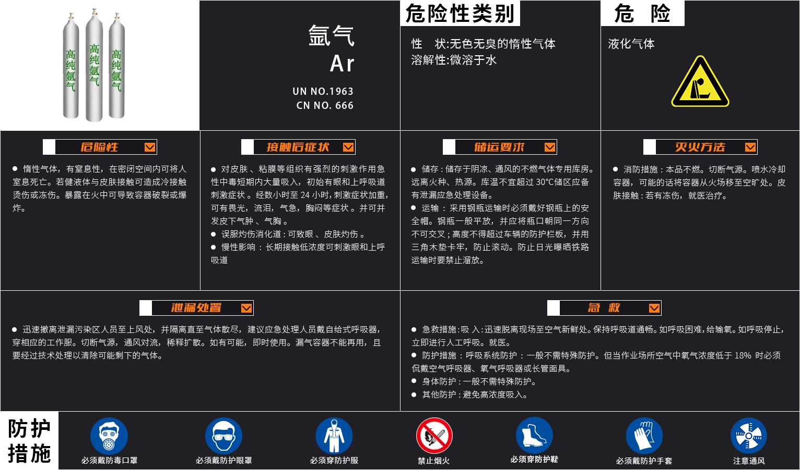

<!DOCTYPE html>
<html lang="en">
<head>
  <title>Argon</title>
  <meta charset="utf-8">
  <meta name="viewport" content="width=device-width, initial-scale=1">
  <link href="https://cdn.jsdelivr.net/npm/bootstrap@5.1.2/dist/css/bootstrap.min.css" rel="stylesheet">
  <script src="https://cdn.jsdelivr.net/npm/bootstrap@5.1.2/dist/js/bootstrap.bundle.min.js"></script>
</head>
<body>
  <div>
   
    <!--  -->
    <div class="btn-group-vertical">
      <div class="btn-group">
          <button type="button" class="btn  argon1" style="background-image: url(1.png);"></button>
          <button type="button" class="btn  argon1" style="background-image: url(2.png);"></button>
          <button type="button" class="btn  argon1" style="background-image: url(3.png);"></button>
          <button type="button" class="btn  argon1" style="background-image: url(4.png);"></button>
        </div> 
        <div class="btn-group"> 
          <button type="button" class="btn  argon2" style="background-image: url(5.png);" onclick='VoiceAnnouncements("惰性气体，有室息性，在密闭空间内可将人室息死亡。若健液体与皮肤接触可造成冷接触烫伤或冻伤。暴露在火中可导致容器破裂或爆炸");'></button>
          <button type="button" class="btn  argon2" style="background-image: url(argon6.png);" onclick='VoiceAnnouncements("对皮肤、粘膜等组织有强烈的刺激作用急性中毒短期内大量吸入，初始有眼和上呼吸道刺激症状。经数小时至 24 小时，刺激症状加重可有畏光，流泪，气急，胸闷等症状。并可并发皮下气肿、气胸。误服灼伤消化道:可致眼 、皮肤灼伤。慢性影响 : 长期接触低浓度可刺激眼和上呼吸道")'></button>
          <button type="button" class="btn  argon2" style="background-image: url(argon7.png);" onclick='VoiceAnnouncements("储存:储存于阴凉、通风的不燃气体专用库房。远离火种、热源。库温不宜超过 30°C储区应备有泄漏应急处理设备。运输 :采用钢瓶运输时必须戴好钢瓶上的安全帽。钢瓶一般平放，并应将瓶口朝同一方向不可交叉;高度不得超过车辆的防护栏板，并用三角木垫卡牢，防止滚动。防止日光曝晒铁路运输时要禁止溜放。")'></button>
          <button type="button" class="btn  argon2" style="background-image: url(argon8.png);" onclick='VoiceAnnouncements("消防措施: 本品不燃。切断气源。喷水冷却容器，可能的话将容器从火场移至空旷处。皮肤接触: 若有冻伤，就医治疗。")'></button>
        </div> 
        <div class="btn-group"> 
          <button type="button" class="btn  argon3" style="background-image: url(argon9.png);" onclick='VoiceAnnouncements("迅速撤离泄漏污染区人员至上风处，并隔离直至气体散尽，建议应急处理人员戴自给式呼吸器,穿相应的工作服。切断气源，通风对流，稀释扩散。如有可能，即时使用。漏气容器不能再用，且要经过技术处理以清除可能剩下的气体。")'></button>
          <button type="button" class="btn  argon3" style="background-image: url(argon10.png);" onclick='VoiceAnnouncements("急救措施:吸 入:迅速脱离现场至空气新鲜处。保持呼吸道通畅。如呼吸困难,给输氧。如呼吸停止,立即进行人工呼吸。就医。防护措施:呼吸系统防护:一般不需特殊防护。但当作业场所空气中氧气浓度低于百分之十八时必须侃戴空气呼吸器、氧气呼吸器或长管面具。身体防护:一般不需特殊防护。其他防护: 避免高浓度吸入。")'></button>
        </div> 
        <div class="btn-group"> 
          <button type="button" class="btn  argon4" style="background-image: url(agon11.png);" onclick='VoiceAnnouncements("急救措施:吸 入:迅速脱离现场至空气新鲜处。保持呼吸道通畅。如呼吸困难,给输氧。如呼吸停止,立即进行人工呼吸。就医。防护措施:呼吸系统防护:一般不需特殊防护。但当作业场所空气中氧气浓度低于 18% 时必须侃戴空气呼吸器、氧气呼吸器或长管面具。身体防护:一般不需特殊防护。其他防护: 避免高浓度吸入。")'></button>
        </div> 
  </div> 
  </div>
   
    

</body>
<style>
  
  .bak{
      position: absolute;
  }
  .argon1{
   
   padding-right: 697.5%;
   padding-top: 460%;
   background-color: rgba(0, 0, 0, 0.342);
   
  }
  .argon2{
     
     padding-right: 697.5%;
     padding-top: 562%;
     background-color: rgba(0, 0, 0, 0.342); 
    }
    .argon3{
     
     padding-right: 1420%;
     padding-top: 430%;
     background-color: rgba(0, 0, 0, 0.342); 
    }
    .argon4{
     
     padding-right: 2863%;
     padding-top: 192%;
     background-color: rgba(209, 34, 34, 0); 
    }
  .bak1{
      display: block;
  }
   
 
</style>
<script>
			
  var tape = null;//声明一个参数方便可以对当前播放的语音进行暂停，继续播放等操作。
  function VoiceAnnouncements(text) {
    if (tape != null) {//防止用户多次点击播放语音播放重复，如果当前语音正在播放则再点击播放时会先判断然后暂停当前播放的音频重新播放
      if (!tape.paused) {
        tape.pause();
      }
    }
    
    var url = "https://dict.youdao.com/dictvoice?audio="+text+"&le=zh"
    var audio = new Audio(url);
    tape = audio;
    audio.src = url;
    audio.play();//播放音频
  };

</script>

</html>